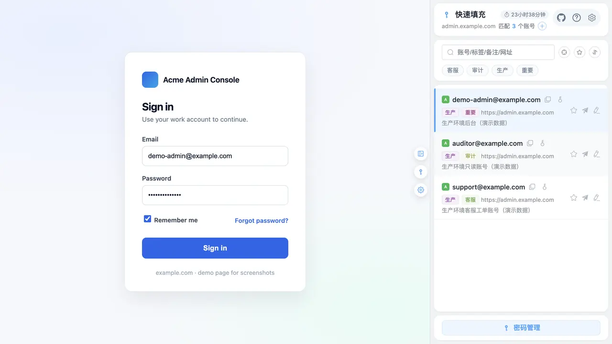

Why this one
七件事，是它和别的
密码管理器真正分开的地方
下面每一条都对应扩展里一个能点到的开关或一处能看到的界面，不是路线图。 页面里的截图全部来自
example.com
虚构演示站，不含任何真实凭据。
⚡
一键登录，不只是填充
Ctrl/Cmd + Shift + F 一次走完「填账号 → 填密码 → 勾选记住我 / 已阅读并同意 /
接受条款」。再打开「自动触发登录」，或用侧边栏与内联面板里的
「填充并登录」，连登录按钮一起点掉。动态检测登录表单，跨 iframe 也能命中，React / Vue
自建组件与「手机号 + 验证码」场景同样适用。
协议勾选自动识别 · 提交动作独立开关 · 默认不替你点
admin.example.com

侧边栏匹配当前站点 3 个账号，选中即填。
🎯
多环境账号隔离
默认只认完全一致的主机名：
dev-admin.example.com 的账号绝不会出现在
admin.example.com 的候选里。在 localhost /
127.0.0.1
上还进一步按端口区分。开发者与测试的刚需，也是它最常被提起的一条差异。
三档跨子域匹配可按需放宽 → 见下方模拟器
🔑
内置 TOTP + 两步登录接力
验证码密钥和密码存在一起（RFC 6238，本地生成），列表与侧边栏直接显示 6 位活码和倒计时圆环。遇到 GitHub
式两步登录，跳到验证码页后活码胶囊会
自动锚定，点「填入」完成第二步——不用切 App、不用摸手机。
支持扫码 / 上传图片本地解码 · 6/7/8 位与算法可自定义
🧲
填不进的页面有兜底
自动检测拿不准的自建登录页（典型是 Web Components 站点），可在管理页「站点规则」为该域名指定账号 /
密码框的 CSS 选择器，每条规则默认开启
影子 DOM 穿透。规则还能导出成明文
JSON（只含域名与选择器，不含账号密码），按域名合并导入、回报新增 / 更新 /
忽略，换机或团队共用不必逐条手配。
封闭 Shadow DOM（mode: closed）任何扩展都读不到，这是浏览器边界
🔒
纯本地加密，零云端
主密码经 PBKDF2-SHA256（600,000 次迭代）派生密钥，五个敏感字段逐个用 AES-256-GCM 加密、每次新的随机
IV，明文只存在于扩展自身上下文。锁定或过期只销毁密钥材料与内存快照——磁盘上本来就是密文，所以
不会在过期瞬间批量重加密，也就没有卡顿。
不使用 storage.sync / managed · 主密码任何形态都不落盘
📊
离线安全体检
一键给出 0–100 分综合评分，四维加权：账号复用 35、弱密码 25、命中泄露字典 20、长期未更新
20；「未开启两步验证」单独列示、不计入扣分。泄露字典是内置近千条的离线词表，全程不联网、不上传任何条目。
可按条目设 7 / 30 / 90 天改密提醒，到期发桌面通知
📦
一键迁移，零门槛
导入时自动识别 Chrome、LastPass、Bitwarden、1Password 的导出格式，CSV / JSON
双格式、中英文列名自动映射，30 秒搬家。反向也有：加密备份（.aph）导出导入支持解密预览，邮箱备份在本机组好内容后经
mailto: 交给你自己的邮件客户端发送。
条目上限 2000，回收站不占额度 · 接近上限时列表按页渲染
🧭
谁在用它
开发者 隔离多环境账号，同一站点的 dev / test / staging / prod 互不串号；测试工程师
一键填充 + 自动触发登录，跨环境回归少摸十倍键盘；
隐私敏感用户 纯本地加密、无需注册与云端同步；日常用户
告别记忆密码，内置 TOTP 与密码生成器。
多环境联调时可与同作者的「跨域代理助手」一起开